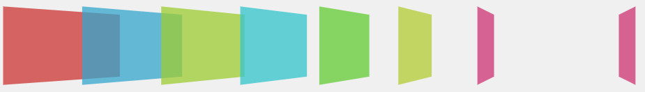
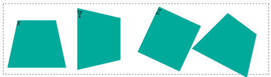
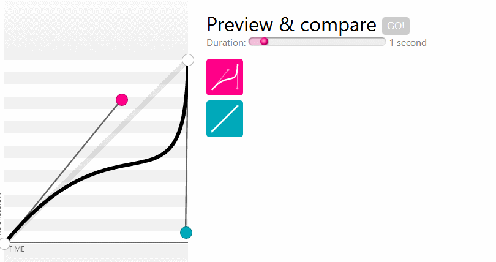

2D变换
在 2D变换模块中，有一系列不同的变化可以应用到元素上，所有这些变换都被声明为transform属性中的函数
基本语法：E{transform: function(value);}
应用多个变换：E{transform: function(value) function(value) function(value) ...;}
由于尚未标准化，还要考虑到在不同浏览器下 的兼容性
E{
-moz-transform: function(value);
-ms-transform: function(value);
-o-transform: function(value);
-webkit-transform: function(value);
transform: function(value);
}
旋转
E{transform: rotate(value);}
这里的value是一个角度值，以deg为单位,正值表示顺时针，比如45deg表示顺时针旋转45度
元素一旦经过变换就像是把position:relative应用到上面，原始位置隐藏起来但会占据位置，这就意味着变换之后可能会覆盖周围的一些元素
变换中心
规定变换的中心轴
transform-origin: 50% 50%;
/*transform-origin: 0px 0px;*/
/*transform-origin: left top;*/
平移
transform: translate(50px,50px);
/*transform: translateX(50px) translateY(50px);*/
倾斜
会受transform-origin的影响
/*transform: skew(-45deg,0deg);*/
transform: skewX(45deg) skewY(0deg);
同时你也可以用倾斜函数来代替旋转函数，只需要把旋转角度赋值给skewX，相反值给skewY
transform: skew(15deg,-15deg);
/*
等价与
transform: rotate(-15deg);
*/
缩放
没啥好解释的会受transform-origin的影响
transform: scaleX(0.5) scaleY(2);
/*transform: scale(0.5,2);*/
2D矩阵变换
你可以使用一个最终变换函数，将多个点换应用到一个元素上，这个函数称为matrix。matrix函数接受六个值，通过对值的组合可以实现上面的所有效果，不过比较难理解。
基本语法：transform: matrix(a,b,c,d,X,Y);
比如通过多重变换实现镜像翻转
transform: scale(1,-1) translate(0px,-80px);
/*通过一个矩阵变换实现多重变换的效果*/
transform: matrix(1,0,0,-1,0,80);
3D变换
CSS3 3D变换模块引入的Z轴，使得CSS3引入了一种真正具有颠覆性的方法，能够在三维中变换元素

透视perspective-origin
perspective的中文意思是：透视，视角！
perspective属性的存在与否决定了你所看到的是2次元的还是3次元的，也就是是2D transform还是3D transform。这不难理解，没有透视，不成3D。
在CSS3 3D transform的默认透视点是元素正中央法线位置指定距离处，近似就是在浏览器的前方眼睛所在方位！perspective-origin就是设置这个透视点的投影位置的

我们都知道近大远小的道理，translateZ的功能就是让元素在自己的眼前或近或远。比方说，我们在视点在屏幕前200px即perspective: 200px;,而translateZ则是控制物体在Z轴的移动，transform: translateZ(0px);表示在原始位置不动，当translateZ值靠近200px时即越来越靠近视点，图像会越来越大（如果父辈元素没有类似overflow:hidden的限制的话），当>=200px时就跑到视点后方了也就看不到了。
<style>
.container{
display: block;
border: 1px dashed grey;
perspective: 200px;
}
.box{
margin: 0 auto;
height: 50px;
width: 50px;
background-color: #00aa9a;
transform: translateZ(0px);
/*transform: translateZ(199px);画面非常大*/
}
</style>
<body>
<section class="container">
<div class="box"></div>
</section>
perspective属性有两种书写形式，一种用在舞台元素上（动画元素们的共同父辈元素），另一种就是用在当前动画元素上，与transform的其他属性写在一起。当为父元素设置perspective时，视点在父元素的正中央的垂直法线指定距离，所以里面的元素与视点并不时成相同的角度，显示会有不同。而与transform的其他属性写在一起相当于为子元素单独设置视点，且每个视点相对元素的位置相同，最终所呈现的效果也一样
.stage {
perspective: 600px;
}
#stage .box {
transform: perspective(600px) rotateY(45deg);
}
视点设置在舞台上时的效果，下图实际上是有九个方格的其中一个角度特殊刚好看不到了

transform-style: preserve-3d
transform-style属性也是3D效果中经常使用的，其两个参数，flat或者preserve-3d. 前者flat为默认值，表示平面的；后者preserve-3d表示3D透视。
preserve-3d符合我们真实世界的思维认识。比方说，你让妹子右转了45度，此时妹子脑袋左转45度想你吐舌卖萌，右转之后妹子的脸蛋应该和你是面对面平行的。
应用transform-style: preserve-3d声明的元素确实是这样表现的，但是，如果使用默认的flat值，其效果表现——恕我想象力有限——想不通：妹子的脸还是左转45度的，同时脑袋似乎移到了身体以外的地方！
因此，基本上，我们想要根据现实经验实现一些3D效果的时候，transform-style: preserve-3d是少不了的。一般而言，该声明应用在3D变换的兄弟元素们的父元素上，也就是舞台元素。
backface-visibility
属性定义当元素不面向屏幕时是否可见。如果在旋转元素不希望看到其背面时，该属性很有用,比如下面的样式，X轴转120度也就是背面，设置backface-visibility:hidden时不可见
.box1{
backface-visibility:hidden;
transform: perspective(100px) rotateX(120deg);
}
旋转
在二维空间中只有一条旋转轴，所以rotate函数只需要一个单独的值。但是在三维中旋转时，有三条轴可以绕着旋转，因此要有三个属性控制
.box1{
transform: perspective(100px) rotateX(25deg);
}
.box2{
transform: perspective(100px) rotateY(25deg);
}
.box3{
transform: perspective(100px) rotateZ(25deg);
}
.box4{
transform: perspective(100px) rotateX(25deg) rotateY(25deg) rotateZ(25deg);
}

变换原点
规定变换的中心点transform-origin: x,y,z;
前两个值和2D变换中的一样，可以是关键字left，right，center，top，bottom…或者是百分比。第三个值是一个长度值，设置了将发生变换距离Z轴的距离。
平移&缩放
受transform-origin的影响
/*平移*/
/*transform: perspective(100px) translateX(20px) translateY(20px) translateZ(20px);*/
transform: perspective(100px) translate3d(20px,20px,20px);
/*缩放*/
/*
scaleX(0.5)
scaleY(1.5)
scaleZ(0.5)
scale3d(x,y,z)
*/
注意scaleZ在没有设置translateZ之前并没小果，必须要先设置scaleZ再设置translateZ才有效果。比如Z轴缩放1.5倍平移10px实际效果为平移15px
3D矩阵变换
在2D变换中最难懂的就是matrix函数，该函数使用六个值和一些三角几何计算去实现复杂的变换。
在3D变换中，引入了具有16个参数的matrix3d函数(～ o ～)~zZ，,不会用啊，语法如下：
transform: matrix3d(
m01,m02,m03,m04,
m05,m06,m07,m08,
m09,m10,m11,m012,
m13,m14,m15,m16
);
过渡
CSS2没有中间状态，当一个属性值发生改变时，是瞬时改变的，比如hover时改变大小时特别生硬。CSS3.0引入了过渡模块，提供了两种状态之间的过渡动画。
主要属性过渡属性，持续时间，计时函数，延迟…比如下面的代码
.box1{
/*那些属性发生改变时要过渡，默认值为all时是全过渡，null时不过度*/
transition-property: transform,background-color;
/*使用自带的及时函数效果，慢慢开始再块加速再在结尾处降低速度
常见的有ease，linear，ease-in，ease-out，ease-in-out
如果不能满足需求可以还有立方贝塞尔曲线自定义
transition-timing-function: cubic-bezier(x1,y1,x2,y2);
*/
transition-timing-function: ease;
/*过渡持续时长，默认是0，等同于不过度。单位有s和ms*/
transition-duration: 500ms;
/*过渡延迟*/
transition-delay: 200ms;
}
.box1:hover{
background-color: pink;
transform: scale(2);
}
立方贝塞尔曲线
transition-timing-function: cubic-bezier(x1,y1,x2,y2);
线的两个端点是固定的，分别在(0,0),(1,1),通过控制点(x1,y1)(x2,y2)来生成贝塞尔曲线，如下图的红蓝点，动画中下面那个是匀速的，和上边的对比可以看到差异

简写
/*注意顺序*/
E{
transition:transition-property transition-duration transition-timing-function transition-delay;
}
/*上面的代码可以简写为*/
.box1{
transition: transform 500ms ease 200ms,background-color 500ms ease 200ms;
}
/*不同值时的简写，多重过渡*/
.box1{
transition-property: transform,background-color;
transition-duration: 500ms,400ms;
}
动画
创建动画的第一步是创建关键帧，在帧中定义元素的属性，最后再应用到动画上。
要注意单个帧上的继承所发挥作用，如果要让一个变化在两个帧上持续，就需要在每一帧中指定它
.box{
animation-name: moveX;
animation-duration: 1s;
animation-timing-function: linear;
animation-iteration-count: infinite;
animation-direction: alternate;
}
.box:hover{
animation-play-state: paused;
}
@keyframes moveX {
/*from{}*/
0%{
transform: translateX(0px);
}
/*to{}*/
100%{
transform: translateX(100px);
}
}
基本属性
动画和过渡一样，大部分的属性都是相似的比如animation-duration，nimation-timing-function，animation-delay
-
迭代次数 animation-iteration-count
指定一个数字，来回算两次，infinite时无限重复
-
方向 animation-direction
有两个值，默认值是normal，动画结束后回到起点。
alternate则是动画播放结束后再逆向播放一遍
-
状态 animation-play-state
控制动画的状态，取值running，paused
-
animation-fill-mode
决定动画播放前后的状态,假设动画时间为2s
none 不改变默认行为，css样式(-1s)-0%样式(0s)-100%样式(1s)-css样式(2s)
backwards：0%样式(-1s)-0%样式(0s)-100%样式(1s)-css样式(2s)
forwards：css样式(-1s)-0%样式(0s)-100%样式(1s)-100%样式(2s)
both：0%样式(-1s)-0%样式(0s)-100%样式(1s)-100%样式(2s)
简写及多重动画
E{
animation:animation-name animation-duration
animation-timing-function animation-delay
animation-iteration-count animation-direction
}
上面的demo可以简写为
.box{
animation: moveX 1s linear 0s infinite alternate;
}
可以使用一个逗号隔开的列表，为元素添加多个动画
E{
animation-name a,b;
animation-duration 1s 2s;
...
}
在简写形式中定义多重动画
E{
animation:一套动画简写,另一套动画简写
}